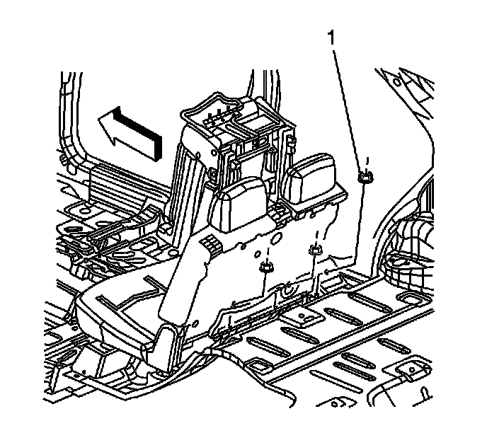
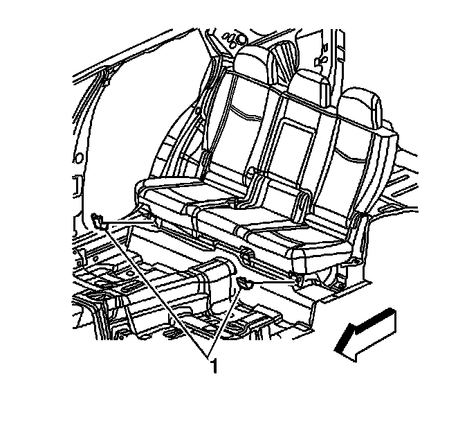
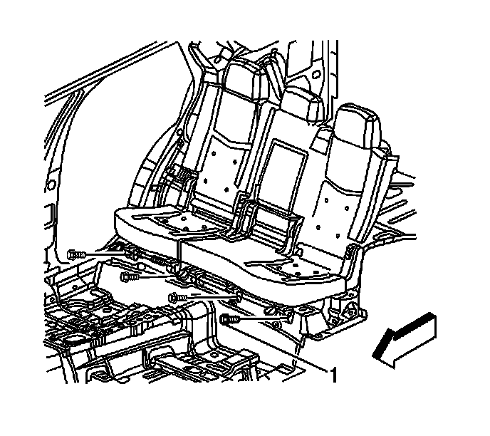
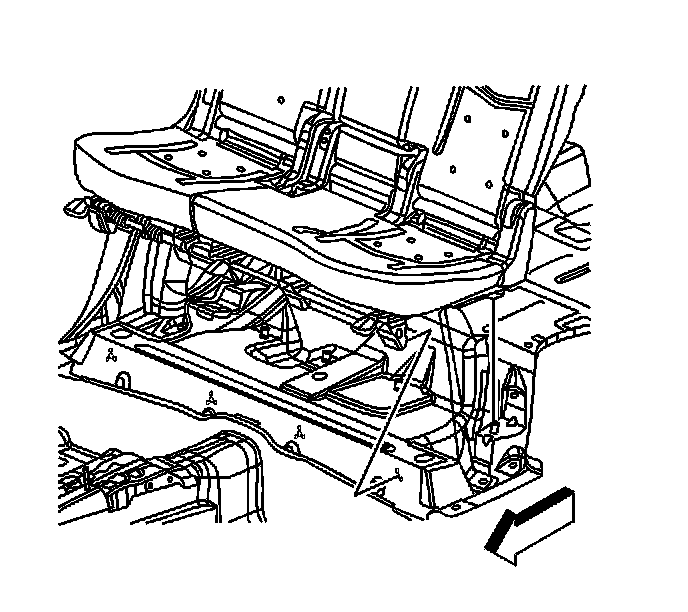

Rear Seat Replacement
Rear Seat Replacement
Removal Procedure

1. Remove the rear seat mounting nuts (1) securing the seat to the vehicle.

2. Remove the rear seat latch covers (1).

3. Remove the rear seat mounting bolts (1) from the front of the seat.
4. Remove the seat from the vehicle.
Installation Procedure

1. Position the seat on the floor studs.
2. Install the rear seat nuts to the front of the seat. Do not tighten the nuts.
3. Install the rear seat nuts (1) to the rear of the seat.
Notice: Refer to Fastener Notice (Fastener Notice) .
4. Install the rear seat mounting nuts.
Tighten the rear seat mounting nuts to 45 N.m (33 lb ft).
5. Install the rear seat latch covers (1).